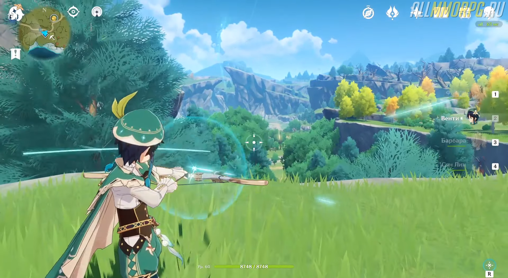
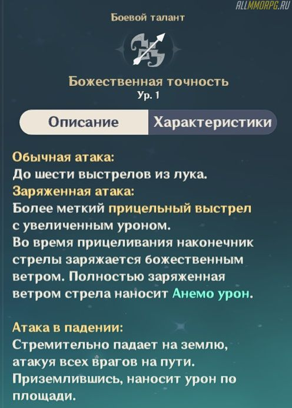
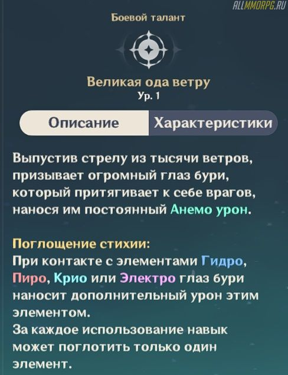

Genshin Impact: гайд на Венти (лучший билд)

Венти – ★★★★★ герой в Genshin Impact, принадлежащий стихии Анемо. Он наносит хороший урон на дальней дистанции с помощью лука, обладает мощными стихийными способностями и прекрасно сочетается с персонажами стихий Пиро, Гидро и Электо. Если вы уже выбили этого героя или только планируете добавить его в свою коллекцию, вам необходимо прочитать гайд на Венти и узнать все его особенности.
1. Преимущества и недостатки Венти
Венти входит в ТОП лучших героев и относится к категории Тир S
Какими плюсами обладает герой:
- Огромная скорость восстановления энергии;
- Элементальные навыки наносят большой урон и помогают в исследовании мира;
- Стихийный взрыв стягивает противников и создает сильные элементальные реакции;
- Талант «Ветряной наездник» – уменьшает затраты выносливости при планировании для всех участников отряда на 20%.
Из минусов Венти стоит выделить только то, что стихийный взрыв слабо влияет на
врагов, находящихся под действием элементальных аур. Это нельзя назвать
существенным недостатком героя, но иногда доставляет определенные неудобства.
2. Описание и особенности использования умений

Божественная точность (активная способность)
При использовании навыка Венти совершает до 6 последовательных выстрелов из лука.
Заряженная атака наносит огромный урон от стихии Анемо.

Небесная поэзия
Особенности «Небесной поэзии» зависят от способа его использования:
- Быстрое нажатие способности. Наносит АОЕ-урон от стихии Анемо;
- Долгое нажатие способности. Создает поток ветра, который подбрасывает врагов в воздух и наносит сильный АОЕ-урон от стихии Анемо.
Поток ветра также подбрасывает и Венти. Эту особенность умения можно использовать для
того, чтобы достичь мест, куда нельзя попасть обычным путем. Видите сундук или окулу на
вершине горы, но не можете туда забраться? Используйте «Небесную поэзию».
Великая ода ветру
«Великая ода ветру» – ультимативная способность, наносящая большой урон. При
использовании навыка Венти выпускает стрелу ветра, создающую Глаз Бури. Он стягивает к
себе всех ближайших противников и наносит им постоянный анемо-урон.
Еще «Великая ода ветру» наносит врагам дополнительный урон при соединении со стихиями
Электро, Пиро, Крио и Гидро.
Обратите внимание: за одно использование ультимейт поглощает только 1 элемент.
Где можно применять способности Венти
Умения Венти наносят неплохой дамаг и позволяют создавать сильные элементальные
реакции. Комбинируйте их со способностями других героев в отряде и без проблем
уничтожайте группы противников и опасных боссов. При необходимости навыки Анемо
можно использовать для решения головоломок.